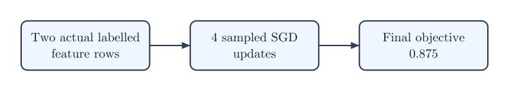
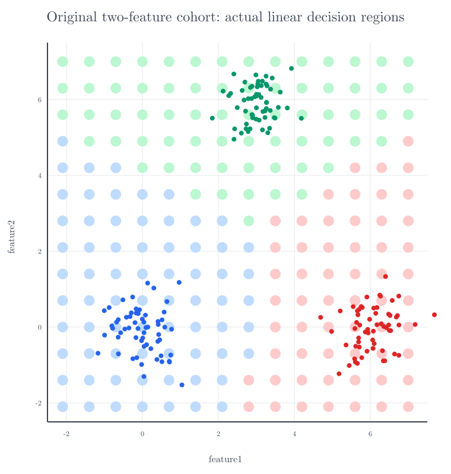
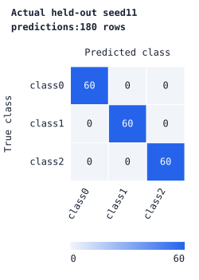
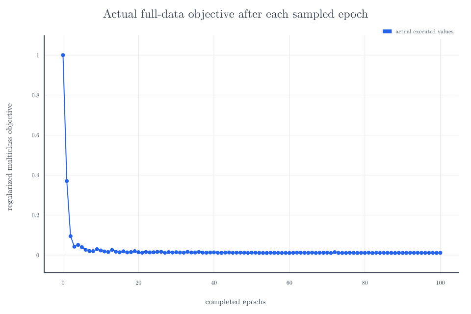

Multiclass structured-SVM special case: actual SGD and decision regions
Abstract
A linear multiclass hinge model separates three two-feature Gaussian clusters. This Crammer-Singer special case exposes actual sampled subgradient updates, full-data epoch diagnostics, decision regions and independently seeded held-out predictions.
Mechanism and mathematical scope
For augmented x=(features,1), scores are w_c*x. Minimize lambda/2*sum_c|w_c|^2 + mean_i[max_c(w_c*x_i+[c!=y_i])-w_y*x_i]. Bias coefficients are regularized. At update t choose a training row with replacement and the lowest-index loss-augmented maximizing class before shrink. With eta=1/(lambda*t), shrink every coefficient by1-eta*lambda; if the maximizing class differs from truth, add eta*x to the true row and subtract it from the selected row. There is no Pegasos projection. Each epoch performs n independent draws, not a shuffle. The objective may fluctuate. This implementation is linear multiclass classification, not general sequence/tree structured inference or a kernel solver.
A tiny actual producing history
The table and native concept diagram read the same producing execution. Every block below is a complete editable C++ program.
#include <dm/dm.hpp>
int main() {
namespace a = dm::algorithms;
namespace g = dm::graphics;
std::filesystem::create_directories("build");
a::StructuredSVMParameters p;
p.lambda = 1;
p.epochs = 2;
p.seed = 1;
auto r = a::structured_svm_trace({{1, 0}, {0, 1}}, {0, 1}, 2, p);
std::print("| actual t | sampled row | truth | violator | rate | shrink | actual weights after |\n| " "---: | ---: | ---: | ---: | ---: | ---: | --- |\n");
for (const auto &s : r.steps)
std::print("| {} | {} | {} | {} | {:.9g} | {:.9g} | `{}` |\n",
s.iteration, s.example, s.truth, s.violator, s.rate,
s.shrink, s.after);
g::Diagram concept_diagram(48, 1100);
concept_diagram.node("n0", {0, 0}, "Two actual labelled feature rows");
concept_diagram.node("n1", {5, 0},
std::format("{} sampled SGD updates", r.updates));
concept_diagram.node("n2", {10, 0},
std::format("Final objective {:.4g}",
r.epochs.back().objective.value));
concept_diagram.edge("n0", "n1").edge("n1", "n2");
concept_diagram.save_svg("build/structured_svm_tiny.svg");
}| actual t | sampled row | truth | violator | rate | shrink | actual weights after |
|---|---|---|---|---|---|---|
| 1 | 0 | 0 | 1 | 1 | 0 | [[1, 0, 1], [-1, 0, -1]] |
| 2 | 0 | 0 | 0 | 0.5 | 0.5 | [[0.5, 0, 0.5], [-0.5, 0, -0.5]] |
| 3 | 0 | 0 | 0 | 0.333333333 | 0.666666667 | [[0.33333333333333337, 0, 0.33333333333333337], [-0.33333333333333337, 0, -0.33333333333333337]] |
| 4 | 0 | 0 | 0 | 0.25 | 0.75 | [[0.25, 0, 0.25], [-0.25, 0, -0.25]] |

The retained original experiment
#include <dm/dm.hpp>
int main() {
namespace a = dm::algorithms;
namespace g = dm::graphics;
std::filesystem::create_directories("build");
auto d = a::structured_svm_example_cohort();
a::StructuredSVMParameters p;
p.lambda = .01;
p.epochs = 100;
p.seed = 1;
auto r = a::structured_svm_run(d.features, d.labels, 3, p);
std::print("Original180 rows, lambda.01,100 epochs, seed1: {} actual updates, training accuracy {:.9g}, " "objective {:.9g}.\n\n| original centroid | actual predicted class |\n| --- | ---: |\n",
r.updates,
double(r.epochs.back().objective.correct) / d.features.size(),
r.epochs.back().objective.value);
for (const auto &pt : std::vector<std::vector<double>>{{0, 0}, {6, 0},
{3, 6}})
std::print("| `{}` | {} |\n", pt, a::structured_svm_predict(r.model, pt));
auto regions = a::structured_svm_regions(r.model, -2.1, 7, 14);
auto chart = g::RPlot::create();
const std::array<g::RGB, 3> pale{{{191, 219, 254}, {254, 202, 202},
{187, 247, 208}}}, dark{
{{37, 99, 235}, {220, 38, 38}, {5, 150, 105}}
};
for (std::size_t c = 0; c < 3; ++c) {
chart.points(regions.x[c], regions.y[c], pale[c], 9);
std::vector<double> x, y;
for (std::size_t i = 0; i < d.labels.size(); ++i)
if (d.labels[i] == int(c)) {
x.push_back(d.features[i][0]);
y.push_back(d.features[i][1]);
}
chart.points(x, y, dark[c], 4);
}
chart.size(760, 800).margins(80, 40, 72, 88).xlim(-2.5, 7.5).ylim(-2.5, 7.5).title("Original two-feature cohort: actual linear decision regions").x_label("feature1").y_label("feature2");
chart.save_svg("build/structured_svm_original.svg");
}Original180 rows, lambda.01,100 epochs, seed1: 18000 actual updates, training accuracy 1, objective 0.0112621377.
| original centroid | actual predicted class |
|---|---|
[0, 0] | 0 |
[6, 0] | 1 |
[3, 6] | 2 |

Explicit controls
#include <dm/dm.hpp>
int main() {
namespace a = dm::algorithms;
namespace g = dm::graphics;
std::filesystem::create_directories("build");
auto train = a::structured_svm_example_cohort();
auto test = a::structured_svm_example_cohort(60, 11);
a::StructuredSVMParameters p;
p.lambda = .01;
p.epochs = 100;
p.seed = 1;
auto r = a::structured_svm_run(train.features, train.labels, 3, p);
dm::nn::ConfusionMatrix matrix(3);
for (std::size_t i = 0; i < test.labels.size(); ++i)
matrix.add(std::size_t(test.labels[i]),
a::structured_svm_predict(r.model, test.features[i]));
std::print("Independent controlled held-out180 rows seed11; training seed3; actual accuracy " "{:.9g}.\n\n| truth | predicted0 | predicted1 | predicted2 |\n| ---: | ---: | ---: | ---: " "|\n",
matrix.accuracy());
for (std::size_t c = 0; c < 3; ++c)
std::print("| {} | {} | {} | {} |\n", c, matrix.cells()[c][0],
matrix.cells()[c][1], matrix.cells()[c][2]);
matrix.save_svg("build/structured_svm_controls.svg",
{.title = "Actual held-out seed11 predictions:180 rows",
.labels = {"class0", "class1", "class2"}});
}Independent controlled held-out180 rows seed11; training seed3; actual accuracy 1.
| truth | predicted0 | predicted1 | predicted2 |
|---|---|---|---|
| 0 | 60 | 0 | 0 |
| 1 | 0 | 60 | 0 |
| 2 | 0 | 0 | 60 |

Actual selected work and sensitivity
#include <dm/dm.hpp>
int main() {
namespace a = dm::algorithms;
namespace g = dm::graphics;
std::filesystem::create_directories("build");
auto d = a::structured_svm_example_cohort();
a::StructuredSVMParameters p;
p.lambda = .01;
p.epochs = 100;
p.seed = 1;
auto r = a::structured_svm_run(d.features, d.labels, 3, p);
std::vector<double> x, y;
std::print("| actual completed epoch | sampled updates | actual regularizer | mean hinge | objective | " "correct /180 |\n| ---: | ---: | ---: | ---: | ---: | ---: |\n");
for (const auto &e : r.epochs) {
x.push_back(e.epoch);
y.push_back(e.objective.value);
std::print("| {} | {} | {:.9g} | {:.9g} | {:.9g} | {} |\n", e.epoch,
e.updates, e.objective.regularizer, e.objective.mean_hinge,
e.objective.value, e.objective.correct);
}
std::print("Actual selected score terms {}, shrink assignments {}, hinge assignments {}, objective norm " "terms {}.\n",
r.score_terms, r.shrink_assignments, r.hinge_assignments,
r.objective_norm_terms);
auto plot = g::RPlot::create();
plot.lines(x, y, "actual executed values", {37, 99, 235}).points(
x, y, {37, 99, 235}, 4).title("Actual full-data objective after each sampled epoch").x_label("completed epochs").y_label("regularized multiclass objective");
plot.save_svg("build/structured_svm_work.svg");
}| actual completed epoch | sampled updates | actual regularizer | mean hinge | objective | correct /180 |
|---|---|---|---|---|---|
| 0 | 0 | 0 | 1 | 1 | 60 |
| 1 | 180 | 0.366307594 | 0.00402964288 | 0.370337237 | 180 |
| 2 | 360 | 0.0945206788 | 0 | 0.0945206788 | 180 |
| 3 | 540 | 0.0420091906 | 0 | 0.0420091906 | 180 |
| 4 | 720 | 0.0326921283 | 0.0182557095 | 0.0509478378 | 180 |
| 5 | 900 | 0.0371004325 | 0.00221447895 | 0.0393149114 | 180 |
| 6 | 1080 | 0.0266208814 | 0 | 0.0266208814 | 180 |
| 7 | 1260 | 0.0195581986 | 0.000640711186 | 0.0201989098 | 180 |
| 8 | 1440 | 0.0196253271 | 0 | 0.0196253271 | 180 |
| 9 | 1620 | 0.0217791703 | 0.00759360544 | 0.0293727758 | 180 |
| 10 | 1800 | 0.0213426697 | 0.00175448475 | 0.0230971545 | 180 |
| 11 | 1980 | 0.0180651654 | 0 | 0.0180651654 | 180 |
| 12 | 2160 | 0.015179757 | 0.000145674263 | 0.0153254313 | 180 |
| 13 | 2340 | 0.0161368636 | 0.0094901087 | 0.0256269723 | 180 |
| 14 | 2520 | 0.0154632156 | 0.00157513864 | 0.0170383542 | 180 |
| 15 | 2700 | 0.0137783263 | 2.61893251e-05 | 0.0138045156 | 180 |
| 16 | 2880 | 0.0132732321 | 0.00541676662 | 0.0186899987 | 180 |
| 17 | 3060 | 0.0123226697 | 0.00105697824 | 0.0133796479 | 180 |
| 18 | 3240 | 0.0128082226 | 0.00198753909 | 0.0147957617 | 180 |
| 19 | 3420 | 0.0127965497 | 0.00652033327 | 0.019316883 | 180 |
| 20 | 3600 | 0.0122986513 | 0.00184941583 | 0.0141480672 | 180 |
| 21 | 3780 | 0.0116308314 | 0.000101266558 | 0.0117320979 | 180 |
| 22 | 3960 | 0.012287422 | 0.00286540993 | 0.0151528319 | 180 |
| 23 | 4140 | 0.0117159416 | 0.0015940831 | 0.0133100247 | 180 |
| 24 | 4320 | 0.0112523943 | 0.00259844623 | 0.0138508405 | 180 |
| 25 | 4500 | 0.0116027422 | 0.00443026008 | 0.0160330023 | 180 |
| 26 | 4680 | 0.011355001 | 0.00505409775 | 0.0164090988 | 180 |
| 27 | 4860 | 0.0114061241 | 0.00051871289 | 0.011924837 | 180 |
| 28 | 5040 | 0.0115359698 | 0.00308566057 | 0.0146216304 | 180 |
| 29 | 5220 | 0.0112819041 | 0.0012243444 | 0.0125062485 | 180 |
| 30 | 5400 | 0.0115254211 | 0.00260375325 | 0.0141291743 | 180 |
| 31 | 5580 | 0.0121264581 | 0.000721677758 | 0.0128481359 | 180 |
| 32 | 5760 | 0.0115554961 | 0.000617952106 | 0.0121734482 | 180 |
| 33 | 5940 | 0.0113975837 | 0.00478447478 | 0.0161820585 | 180 |
| 34 | 6120 | 0.0112612361 | 0.00146646877 | 0.0127277049 | 180 |
| 35 | 6300 | 0.0115872046 | 0.00113691966 | 0.0127241243 | 180 |
| 36 | 6480 | 0.0115059412 | 0.0041153391 | 0.0156212803 | 180 |
| 37 | 6660 | 0.0113576664 | 0.000969501232 | 0.0123271676 | 180 |
| 38 | 6840 | 0.0110445893 | 0.000939707248 | 0.0119842966 | 180 |
| 39 | 7020 | 0.010798311 | 0.00193618825 | 0.0127344993 | 180 |
| 40 | 7200 | 0.0108772062 | 0.00251084956 | 0.0133880558 | 180 |
| 41 | 7380 | 0.0107285975 | 0.000991966738 | 0.0117205642 | 180 |
| 42 | 7560 | 0.0104776785 | 0.000416889352 | 0.0108945678 | 180 |
| 43 | 7740 | 0.0106040877 | 0.00189660377 | 0.0125006915 | 180 |
| 44 | 7920 | 0.0105294931 | 0.0023459941 | 0.0128754872 | 180 |
| 45 | 8100 | 0.0102692671 | 0.00145178783 | 0.011721055 | 180 |
| 46 | 8280 | 0.0106914053 | 0.00140160433 | 0.0120930096 | 180 |
| 47 | 8460 | 0.0106146391 | 0.00166433941 | 0.0122789785 | 180 |
| 48 | 8640 | 0.0101769695 | 0.00186114716 | 0.0120381166 | 180 |
| 49 | 8820 | 0.0100689967 | 0.00109295164 | 0.0111619483 | 180 |
| 50 | 9000 | 0.00979598791 | 0.00239925361 | 0.0121952415 | 180 |
| 51 | 9180 | 0.00973992259 | 0.00241560766 | 0.0121555303 | 180 |
| 52 | 9360 | 0.00999413334 | 0.00112914004 | 0.0111232734 | 180 |
| 53 | 9540 | 0.00962055413 | 0.00134790307 | 0.0109684572 | 180 |
| 54 | 9720 | 0.0093693294 | 0.00126317393 | 0.0106325033 | 180 |
| 55 | 9900 | 0.00945918936 | 0.00225244486 | 0.0117116342 | 180 |
| 56 | 10080 | 0.00922352593 | 0.00213538208 | 0.011358908 | 180 |
| 57 | 10260 | 0.00898258477 | 0.00205322301 | 0.0110358078 | 180 |
| 58 | 10440 | 0.00911559662 | 0.00164348184 | 0.0107590785 | 180 |
| 59 | 10620 | 0.00923562536 | 0.00181426728 | 0.0110498926 | 180 |
| 60 | 10800 | 0.00930823291 | 0.00139114809 | 0.010699381 | 180 |
| 61 | 10980 | 0.00967054403 | 0.0018042682 | 0.0114748122 | 180 |
| 62 | 11160 | 0.00991674663 | 0.00217515283 | 0.0120918995 | 180 |
| 63 | 11340 | 0.00985757357 | 0.00207705893 | 0.0119346325 | 180 |
| 64 | 11520 | 0.00962841658 | 0.00180579234 | 0.0114342089 | 180 |
| 65 | 11700 | 0.00955290151 | 0.00150808679 | 0.0110609883 | 180 |
| 66 | 11880 | 0.0097899183 | 0.00231031239 | 0.0121002307 | 180 |
| 67 | 12060 | 0.00978048526 | 0.000978849703 | 0.010759335 | 180 |
| 68 | 12240 | 0.00981144469 | 0.00187979101 | 0.0116912357 | 180 |
| 69 | 12420 | 0.00978205648 | 0.00163830478 | 0.0114203613 | 180 |
| 70 | 12600 | 0.0095827146 | 0.00251456078 | 0.0120972754 | 180 |
| 71 | 12780 | 0.00961489461 | 0.000888319847 | 0.0105032145 | 180 |
| 72 | 12960 | 0.00950586262 | 0.0047981891 | 0.0143040517 | 180 |
| 73 | 13140 | 0.00946305458 | 0.00140671808 | 0.0108697727 | 180 |
| 74 | 13320 | 0.00920902444 | 0.0016106577 | 0.0108196821 | 180 |
| 75 | 13500 | 0.00903118904 | 0.0018919242 | 0.0109231132 | 180 |
| 76 | 13680 | 0.00906893318 | 0.00241266457 | 0.0114815978 | 180 |
| 77 | 13860 | 0.00913595851 | 0.00195853884 | 0.0110944974 | 180 |
| 78 | 14040 | 0.00908213494 | 0.0014673107 | 0.0105494456 | 180 |
| 79 | 14220 | 0.00907692263 | 0.00223573115 | 0.0113126538 | 180 |
| 80 | 14400 | 0.00923254669 | 0.00183506485 | 0.0110676115 | 180 |
| 81 | 14580 | 0.00913720326 | 0.00287693183 | 0.0120141351 | 180 |
| 82 | 14760 | 0.00910599639 | 0.00123937085 | 0.0103453672 | 180 |
| 83 | 14940 | 0.00909139983 | 0.00262723393 | 0.0117186338 | 180 |
| 84 | 15120 | 0.00909948889 | 0.00196458639 | 0.0110640753 | 180 |
| 85 | 15300 | 0.00927269364 | 0.0020407638 | 0.0113134574 | 180 |
| 86 | 15480 | 0.00905830334 | 0.00224143992 | 0.0112997433 | 180 |
| 87 | 15660 | 0.00891491441 | 0.00205014034 | 0.0109650547 | 180 |
| 88 | 15840 | 0.00889146368 | 0.00150893522 | 0.0104003989 | 180 |
| 89 | 16020 | 0.0089525599 | 0.00245738522 | 0.0114099451 | 180 |
| 90 | 16200 | 0.00892508819 | 0.00190148431 | 0.0108265725 | 180 |
| 91 | 16380 | 0.00884334371 | 0.00207305968 | 0.0109164034 | 180 |
| 92 | 16560 | 0.00897710257 | 0.00250851797 | 0.0114856205 | 180 |
| 93 | 16740 | 0.00920921562 | 0.00204291515 | 0.0112521308 | 180 |
| 94 | 16920 | 0.00926723373 | 0.00222073079 | 0.0114879645 | 180 |
| 95 | 17100 | 0.00917800971 | 0.00191114415 | 0.0110891539 | 180 |
| 96 | 17280 | 0.00918758217 | 0.00191685096 | 0.0111044331 | 180 |
| 97 | 17460 | 0.00928034378 | 0.00203224953 | 0.0113125933 | 180 |
| 98 | 17640 | 0.00937349481 | 0.00191354152 | 0.0112870363 | 180 |
| 99 | 17820 | 0.00932903551 | 0.00134338968 | 0.0106724252 | 180 |
| 100 | 18000 | 0.00924298895 | 0.00201914878 | 0.0112621377 | 180 |
Actual selected score terms 325620, shrink assignments 162000, hinge assignments 1962, objective norm terms 909.

API and interpretation
Finite rectangular features, matching labels and positive finite lambda are checked. Zero epochs returns a zero model on nonempty input; matching empty inputs preserve an empty unfitted model, whose scoring/prediction throws. Class ties select the smallest index. Original engine and update order are retained. The held-out set is a separate draw from the same synthetic centers, not evidence about real-world generalization. Confusion rows are truth, columns prediction, with raw counts and no omitted observations. Decision regions use exactly two features and equal axis scales.
Reusable producers, fixtures and histories live in the canonical C++ library. Captured records own their values and do not come from a separate report replay. Selected counters and record/scalar policies are specified at their API boundaries; they are not peak-byte or wall-time budgets. Synthetic structural inputs are controlled fixtures for these mechanisms.
References
Verified in the shared ten-document batch: 58 scoped native cases;20 directly
instrumented ASan/UBSan cases;90 executable public examples;416/416 definitions
across25 full scopes;10 hovers;1968 independent records/417332 checks;frozen
comparisons across all ten families with SIP returned-iterate correction
recorded;14 checkout/installed standalone headers and linked ten-family
consumer;40 executed programs and40 inspected figures with both exports.
Receipts: build/mepml-conversion/batch-374-383/.